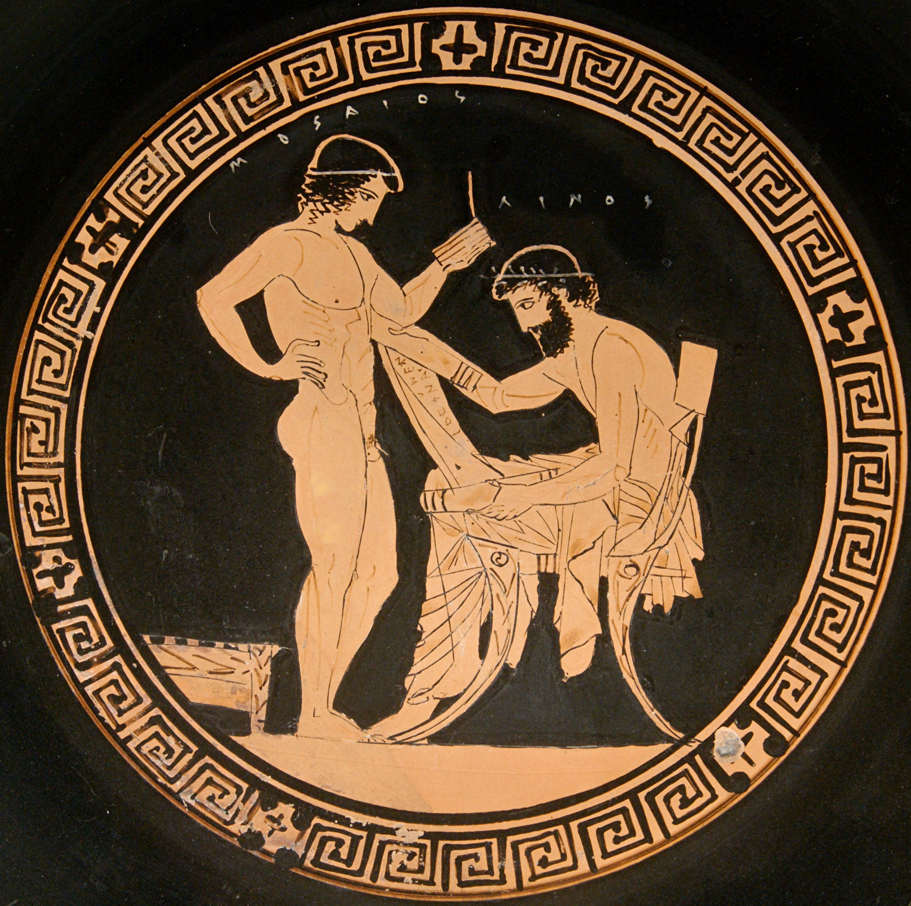

I like reading on paper, or at least I used to until I got my first Kindle. I never get that people who talk about the feeling of the paper, the smell of the book, and the sound of pages turning back and forward. It seems to me that they are doing everything with those books except for actually reading them. One may argue that my preference is because of my millennial birthmark, but it really comes handy to read from an electronic device. It can carry thousands of books and different dictionaries –language ones included, for those who read in more than one language. Plus, typography type, color, and size can be adjusted as well as light intensity, so you can actually spend hours reading without having a headache.
Although Kindle first introduced me to electronic reading, later on, during my university years, I discovered the Books app pre-installed in my first iPhone 4S which added two cool features that made my product loyalty being questioned.
The first one was the color highlighting with which you get to use different colors for your highlights. I instantly developed a color system in which I reserved the default yellow color to spot important stuff, the green one for new terms and words that I didn’t know but which use would made me look like an advance reader, and the blue one for quotes and passages that really hit something in me and I would love to remember. There were also the purple and pink options, but they always made me anxious, so I never used them. In any case, I couldn’t stick with my color system, it was too much trouble switching between colors that often requires more than one hand, and when traveling on the subway, you know you can’t risk letting go of holding the bar.
I wonder how people manage to travel on the subway while using those new large phones that require both of your hands in order to use them. No wonder why the screen crashes from phone falling have risen since the iPhone 6 release. Oh, how much we miss Steve Jobs.

Tondo from an Attic red figure cup. Teacher Linos (right) holds a papyrus roll while his pupil, Mousaios (left), holds writing tablets.
The second feature I haven’t been able to set on my Kindle, but Books offers in just a few taps is the vertical scrolling. Instead of tapping the edges of the virtual pages or dragging them to simulate turning them, you can scroll up and down to move in your reading. That is just like the old Egyptians and Greeks used to do with the papyrus. Giving new life to a gesture –the vertical reading– that has been buried from almost 2,500 years1. I bet that if Apple starts promoting this feature just like these all those so called lovers of the smell of old books would instantly switch up to the Books app with his old-fashioned vertical reading.
Don’t get me wrong, I like physical books, as a matter of fact if I have to choose between buying the physical or the electronic format, I’d rather go with the first one, not for the «whole reading experience» but rather because I don’t wanna feel scammed paying $25 bucks for a few bytes that didn’t have any production costs associated. If I’m gonna spend serious money on a book, at least I wanna touch it.
References
1 I am using a reference the latest use of papyrus by Greeks documented in 6th century BCE by the Encyclopedia Britannica on his History of Publishing: Greek books article.